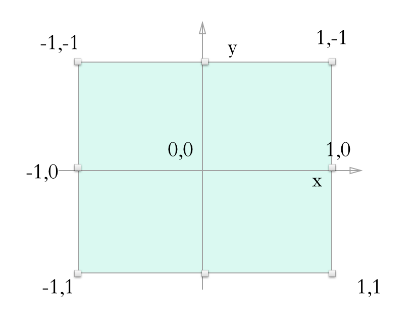
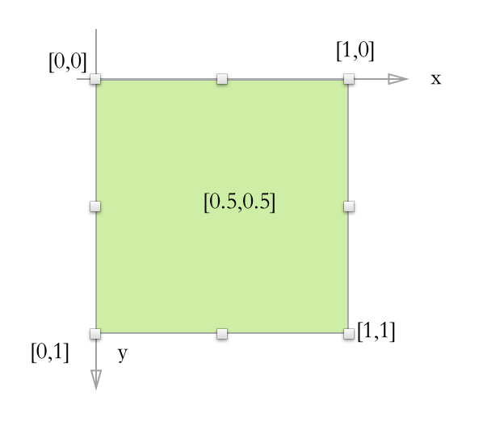
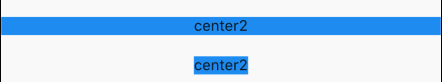

4.6 对齐与相对定位(Align)
4.6.1 Align
Align组件可以调整子组件的位置，并根据父组件的高度和宽度来确定自身的高度，我们来看下属性：
Align({
Key key,
this.alignment = Alignment.center,
this.widthFactor,
this.heightFactor,
Widget child,
})
alignment在父组件中的位置，我们看下他的所有值和计算方式。TopLeft = Alignment(-1.0, -1.0)中间点是[0,0],右下角是[1,1],具体的看下图：

| alignment | 含义 |
|---|---|
| topLeft | 顶部左侧 |
| topCenter | 顶部中间 |
| topRight | 顶部右侧 |
| centerLeft | 中间侧 |
| center | 中间 |
| centerRight | 中间右侧 |
| bottomLeft | 底部左侧 |
| bottomCenter | 底部中间 |
| bottomRight | 底部右侧 |
widthFactor和heightFactor是父组件/当前组件的比例系数，在父组件未指定具体大小的时候，则通过计算得出父组件大小，具体公式：
子组件宽度* widthFactor =父组件宽度子组件高度* heightFactor =父组件高度
例子：
Container(
color: Colors.black12,
child: Align(
alignment: Alignment.bottomRight,
widthFactor: 2,
heightFactor: 2,
child: FlutterLogo(
size: 30,
)),
),
效果：
当前logo大小是30*30,父组件大小是30*2=60,宽度和高度一致。当显示指定大小，则忽略该参数。
Container(
width: 200,
height: 200,
color: Colors.black12,
child: Align(
alignment: Alignment.bottomRight,
widthFactor: 2,
heightFactor: 2,
child: FlutterLogo(
size: 30,
)),
),
效果：
除了这种方式，也可以在父组件中指定子组件的位置
Container(
width: 200,
height: 200,
color: Colors.black12,
alignment: Alignment.center,
child: Align(
alignment: Alignment.bottomRight,
widthFactor: 2,
heightFactor: 2,
child: FlutterLogo(
size: 30,
)),
)
当父组件中指定了位置，则在Align中Logo站的大小还是widthFactor * 30,再次基础上面再执行子组件的位置。也就是父组件大小是200*200,子组件Logo具体大小是30*30,Align相对于父组件居中，占地大小是60*60,Logo相对于Align在底部右侧。
千言万语不如一张图：

根据源码得知：
static const Alignment topLeft = Alignment(-1.0, -1.0)
其实官方的9中位置，只是提前定义好的，如果自己想要有其他的具体的位置的话，可以使用Alignment(x, y)或者FractionalOffset(x, y)来指定具体的其他位置。
Alignment
Alignment其实就是一个坐标，具体的坐标系是
原点在中间，组件的偏移量换算公式是
(Alignment.x*childWidth/2+childWidth/2, Alignment.y*childHeight/2+childHeight/2)
childWidth在子组件的宽度，childHeight是子组件的高度
我们再看这个例子：
Container(
width: 200,
height: 200,
color: Colors.black12,
child: Align(
alignment: Alignment(0, 1),
child: FlutterLogo(
size: 30,
)),
)
我们将Alignment(1.0, -1.0)带入上面的工时得出：FlutterLogo实际偏移坐标是(100,200)
再看另外一个例子：
Container(
width: 200,
height: 200,
color: Colors.black12,
child: Align(
alignment: Alignment(2, 1),
child: FlutterLogo(
size: 30,
)),
)
经过计算得出FlutterLogo偏移量是(300,200)。
FractionalOffset
FractionalOffset是继承Alignment，他们最大不同就是原点坐标不一致，Alignment原点在组件中间,FractionalOffset在组件左上角，和iOS坐标系有点类似。
坐标系如图所示： 
偏移量公式是
实际偏移 = (FractionalOffse.x * childWidth, FractionalOffse.y * childHeight)
下面我们看个例子：
Container(
width: 200,
height: 200,
color: Colors.blue[50],
child: Align(
alignment: FractionalOffset(0.5, 0.5),
child: FlutterLogo(
size: 30,
)),
),
将公式带入FractionalOffset(0.5, 0.5)得出，最终FlutterLogo的偏移量是(100,100).
再看另外一个例子;
Container(
width: 200,
height: 200,
color: Colors.blue[50],
child: Align(
alignment: FractionalOffset(0, -0.1),
child: FlutterLogo(
size: 30,
)),
),
将公式带入FractionalOffset(0, -0.1)得出，最终FlutterLogo的偏移量是(0,-20).
效果如下：
4.6.2 Center
Center是继承Align的，源码很简单
class Center extends Align {
/// Creates a widget that centers its child.
const Center({ Key key, double widthFactor, double heightFactor, Widget child })
: super(key: key, widthFactor: widthFactor, heightFactor: heightFactor, child: child);
}
因为Align默认是位置是center,所以用Align()和Center效果是一致的。只是Center无法另外指定其他位置。
我们看下面的例子：
DecoratedBox(
decoration: BoxDecoration(color: Colors.blue),
child: Center(
child: Text('center2'),
),
),
SizedBox(
height: 20,
),
DecoratedBox(
decoration: BoxDecoration(color: Colors.blue),
child: Center(
widthFactor: 1,
heightFactor: 1,
child: Text('center2'),
),
)
效果：

当widthFactor和heightFactor没指定时，默认是铺满父容器的
总结
这一节主要讲解了Align组件及两种偏移类Alignment 和FractionalOffset，读者需要理解这两种偏移类的区别及各自的坐标转化公式。另外，在此建议读者在需要制定一些精确的偏移时应优先使用FractionalOffset，因为它的坐标原点和布局系统相同，能更容易算出实际偏移。